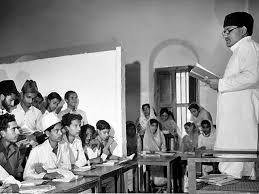

قومی خبریں
اسلام آباد—وزیراعظم نے نئی تعلیمی پالیسی کا اعلان کیا۔تمام اسکولوں میں ڈیجیٹل تعلیم شروع ہوگی۔پانچ سال میں تعلیمی نظام کی تبدیلی۔حکومت نے پچاس ارب مختص کیے۔اساتذہ کی تربیت ہوگی۔طلباء کو مفت ٹیبلٹس ملیں گے۔نئے نصاب پر کام شروع ہوگیا۔تعلیمی ماہرین نے پالیسی کو سراہا اور کہا کہ یہ ملک کے مستقبل کے لیے انتہائی اہم قدم ہے۔
کراچی رپورٹ
کراچی(نامہ نگار)—شہر میں نئے میٹرو بس منصوبے کا آغاز۔تین نئے راستے شامل کیے گئے۔شہریوں کو سفر میں آسانی ہوگی۔ٹریفک کے مسائل میں کمی آئے گی۔میئر نے کہا یہ پہلا مرحلہ ہے۔اگلے سال مزید توسیع ہوگی۔سندھ حکومت نے مالی معاونت کی یقین دہانی کرائی ہے۔میٹرو اسٹیشنز کی تعمیر جاری ہے اور جلد مکمل ہوں گے۔
سینیٹ اجلاس
اسلام آباد—سینیٹ کا اجلاس آج شام طلب ہوا۔صحت کے بجٹ پر بحث ہوگی۔اپوزیشن نے نوٹس جمع کرایا۔چیئرمین نے تمام ارکان کو حاضری کی ہدایت دی۔موسمیاتی تبدیلی پر قرارداد پیش کی جائے گی۔ماحولیاتی تحفظ کے اقدامات زیر بحث آئیں گے۔حکومت اور اپوزیشن میں مشاورت ہوئی ہے۔اجلاس کا دورانیہ تین دن متوقع ہے۔
عالمی خبریں
لندن(رائٹر)—برطانیہ نے پاکستان کے ساتھ تجارتی معاہدہ کیا۔امریکہ نے خوش آمدید کہا۔یورپی یونین نے بھی دلچسپی ظاہر کی۔چین نے سی پیک کی پیش رفت کو سراہا۔عالمی بینک نے پاکستان کی ترقی پر رپورٹ جاری کی۔آئی ایم ایف نے معاشی استحکام کو تسلیم کیا۔خلیجی ممالک نے سرمایہ کاری کا اعلان کیا۔
روزنامہ — صبح ایڈیشن
جنگ
JANG
۱۶ فروری ۲۰۲۶ء
کراچی
خصوصی تجزیہ
اسلام آباد(خصوصی)—پاکستان کے تعلیمی نظام میں انقلابی تبدیلی کا اعلان ہوا۔وزیراعظم نے کہا ڈیجیٹل پاکستان بنانا حکومت کا عزم ہے۔تمام سرکاری اسکولوں میں کمپیوٹر لیبز قائم کی جائیں گی۔انٹرنیٹ کی سہولت مفت ہوگی۔اساتذہ کو جدید تربیت دی جائے گی۔نصاب کو عصری تقاضوں کے مطابق بنایا جائے گا۔تعلیمی ماہرین نے پالیسی کو تاریخی قرار دیا۔پوری قوم اس اقدام کی تائید کرتی ہے۔والدین میں خوشی کی لہر دوڑ گئی۔تعلیمی اداروں نے استقبال کیا۔
ڈیجیٹل تعلیم کا آغاز - طلباء کو مفت ٹیبلٹس کی تقسیم
اسلام آباد(خصوصی)—حکومت پاکستان نے تعلیمی انقلاب کا آغاز کیا۔وزیراعظم نے اعلان کیا کہ تمام طلباء کو مفت ٹیبلٹس دیے جائیں گے۔پہلے مرحلے میں دس لاکھ ٹیبلٹس تقسیم ہوں گے۔سرکاری اسکولوں کو ترجیح دی جائے گی اور غریب طلباء کو پہلے موقع ملے گا۔
وزیر تعلیم نے کہا یہ پالیسی ملک کی تاریخ میں سنگ میل ہے۔ڈیجیٹل تعلیم سے طلباء کی صلاحیتیں نکھریں گی۔آن لائن کورسز دستیاب ہوں گے۔اساتذہ کو خصوصی تربیت دی جائے گی۔تعلیمی معیار بہتر ہوگا اور طالب علم جدید دنیا کے لیے تیار ہوں گے۔
تعلیمی ماہرین نے اس اقدام کو بے حد سراہا۔انہوں نے کہا یہ پاکستان کے مستقبل کے لیے بہترین فیصلہ ہے۔والدین میں خوشی کی لہر ہے۔طلباء نے شکریہ ادا کیا۔اسکولوں میں جشن کا ماحول ہے۔پرنسپلز نے کہا یہ خواب تھا جو پورا ہوا۔
وزارت تعلیم نے تصدیق کی تقسیم اگلے ماہ شروع ہوگی۔خصوصی ٹیمیں تشکیل دی گئیں۔ہر ضلع میں سنٹرز قائم ہوں گے۔والدین کو پیشگی اطلاع دی جائے گی۔شناختی کارڈ لازمی ہوگا۔طلباء کی حاضری چیک کی جائے گی۔پورے عمل کی نگرانی کمیٹیاں کریں گی۔
اس منصوبے کو عالمی سطح پر سراہا جا رہا ہے۔یونیسکو نے مبارکباد دی۔دیگر ممالک نے دلچسپی ظاہر کی۔پاکستانی اخبارات نے اسے تاریخی قرار دیا۔سوشل میڈیا پر رد عمل مثبت ہے۔نوجوانوں نے خوشی کا اظہار کیا۔یہ منصوبہ ملک کی ترقی کی ضمانت ہے۔
اسلام آباد(نامہ نگار)—وزیراعظم نے قومی اسمبلی میں تقریر کرتے ہوئے کہا کہ تعلیم ہماری ترجیح ہے۔ملک کی ترقی کا راز تعلیم یافتہ نوجوانوں میں ہے۔ڈیجیٹل پاکستان بنانا ہمارا خواب ہے۔اس مقصد کے لیے ہر ممکن وسائل استعمال کیے جائیں گے۔بجٹ میں تعلیم کا حصہ بڑھایا گیا۔نئے اسکول کھولے جائیں گے۔اساتذہ کی تنخواہوں میں اضافہ ہوگا۔لیبارٹریز اور لائبریریاں قائم ہوں گی۔انٹرنیٹ کی رسائی ہر اسکول میں۔کمپیوٹر کی تعلیم لازمی قرار پائی۔نصاب میں سائنس اور ٹیکنالوجی کو اہمیت دی جائے گی۔
لاہور میں تقریب—لاہور(نامہ نگار)—وزیر اعلیٰ پنجاب نے لاہور میں خصوصی تقریب میں پہلا ٹیبلٹ ایک طالبہ کو دیا۔ہزاروں افراد شریک تھے۔تعلیمی اداروں کے سربراہان موجود تھے۔والدین کی بڑی تعداد شامل۔طلباء نے خوشی کا اظہار کیا۔مقررین نے کہا یہ دن تاریخی ہے۔پنجاب بھر میں جشن منایا گیا۔اسکولوں میں خصوصی پروگرام۔قومی ترانہ گایا گیا۔پھول نچھاور کیے گئے۔میڈیا کی بھرپور کوریج۔ٹی وی چینلز نے براہ راست نشریات کیں۔اس موقع پر سوشل میڈیا پر رونق رہی۔
کلاس روم میں طلباء تعلیم حاصل کرتے ہوئے

تعلیمی ادارے میں لیکچر کا منظر
اساتذہ کی تربیت—کراچی(رپورٹر)—تعلیمی پالیسی کے تحت اساتذہ کی خصوصی تربیت کا آغاز۔پہلے مرحلے میں پانچ ہزار اساتذہ شامل۔تربیتی کورس تین ماہ کا ہوگا۔ڈیجیٹل تدریس کی تکنیک سکھائی جائے گی۔ماہرین معلمین کو رہنمائی دیں گے۔نئے طریقے سکھائے جائیں گے۔آن لائن ٹولز کا استعمال۔طلباء سے بہتر رابطہ۔نصاب کو دلچسپ بنانا۔تخلیقی صلاحیتوں کا فروغ۔اساتذہ نے خوشی کا اظہار کیا اور کہا یہ ان کی پیشہ ورانہ ترقی ہے۔
اس تعلیمی انقلاب کو دنیا بھر میں سراہا جا رہا ہے۔یونیسکو نے کہا پاکستان صحیح سمت میں ہے۔امریکہ نے تعاون کی پیشکش کی۔برطانیہ نے مالی امداد کا اعلان کیا۔عالمی بینک منصوبے میں شریک ہوگا۔چین نے ٹیکنالوجی فراہم کرنے کا وعدہ۔خلیجی ممالک نے دلچسپی دکھائی۔ملک بھر میں خوشی کا ماحول۔
معیشت میں بہتری — برآمدات میں نمایاں اضافہ ریکارڈ قائم
معاشی خبریں
کراچی(رپورٹر)—اسٹاک مارکیٹ میں تیزی کا رجحان۔کاروبار کی حد عبور۔سرمایہ کاروں میں اعتماد بحال۔روپے کی قدر مستحکم۔زر مبادلہ کے ذخائر بڑھے۔برآمدات میں ریکارڈ اضافہ۔صنعتی پیداوار زیادہ ہوئی۔کاروباری حلقوں نے خوشی کا اظہار کیا۔وزیر خزانہ نے کہا معیشت مضبوط ہو رہی ہے۔نئی سرمایہ کاری آ رہی ہے اور روزگار کے مواقع بڑھ رہے ہیں۔
کھیلوں کی خبریں
لاہور(کھیل نامہ نگار)—قومی کرکٹ ٹیم نے شاندار کامیابی حاصل کی۔بین الاقوامی سیریز جیت لی۔کپتان نے کہا ٹیم ورک کامیاب رہا۔نوجوان کھلاڑیوں نے شاندار کارکردگی دکھائی۔کوچ نے ٹیم کو مبارکباد دی۔پورا ملک خوش ہے۔فٹبال ٹیم بھی اچھا کھیل رہی۔ہاکی میں بہتری آ رہی۔کھیلوں کے فروغ کے لیے نئے منصوبے۔
صحت کے منصوبے
اسلام آباد—وزارت صحت نے نئے ہسپتال کھولنے کا اعلان۔دیہی علاقوں میں بنیادی صحت کی سہولت۔مفت علاج کی سکیم بڑھائی۔ڈاکٹرز کی تعداد میں اضافہ۔جدید آلات خریدے جائیں گے۔ایمبولینس سروس بہتر بنائی۔ادویات کی فراہمی یقینی۔غریب مریضوں کے لیے امداد۔حکومت نے بجٹ میں اضافہ کیا۔صحت کو ترجیح دی جا رہی ہے۔
موسمیاتی تبدیلی
کراچی(ماحولیات)—حکومت نے درخت لگانے کی مہم شروع کی۔پورے ملک میں کروڑوں درخت۔ماحول دوست پالیسیاں۔آلودگی کم کرنے کے اقدامات۔قابل تجدید توانائی کا فروغ۔شمسی توانائی کو ترجیح۔صاف پانی کی فراہمی۔کوڑے کے ٹھکانے لگانے کا نظام۔شہری ماحول بہتر بنانا۔عالمی معیار پر پورا اترنا۔ایک صاف پاکستان کی تعمیر۔
سائنس و ٹیکنالوجی
اسلام آباد(سائنس)—پاکستانی سائنسدانوں کی نئی ایجاد۔شمسی توانائی کا نیا نظام۔کم لاگت میں بجلی بنانا۔دیہات میں روشنی پہنچانا۔توانائی کے بحران کا حل۔حکومت نے تحقیق کو سپورٹ کیا۔نوجوان سائنسدانوں کی حوصلہ افزائی۔یونیورسٹیوں میں تحقیق کا فروغ۔ملک کا نام روشن ہوا۔
پاکستان میں تعلیمی انقلاب کا آغاز — وزیراعظم نے ڈیجیٹل پاکستان کے خواب کو حقیقت بنانے کا عزم ظاہر کیا — روزنامہ جنگ کراچی ۱۶ فروری ۲۰۲۶ء
ناشر: جنگ پبلیکیشنز | پرنٹر: جنگ پریس کراچی | ایڈیٹر: احمد علی خان